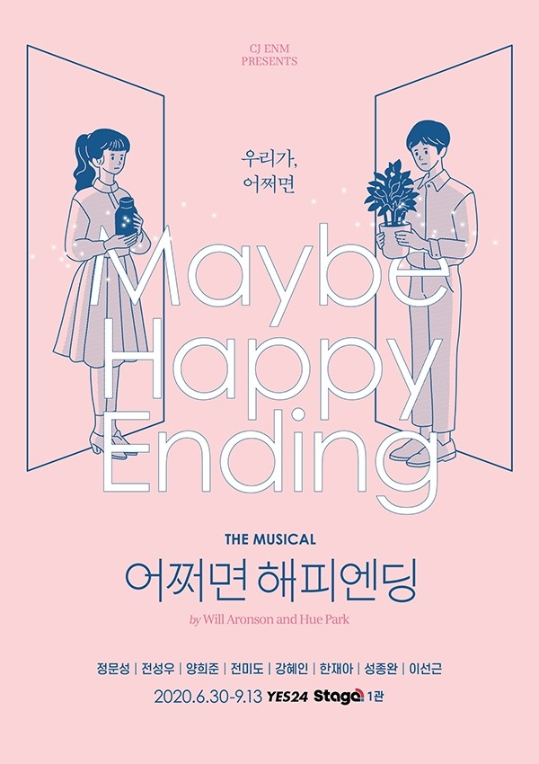

Welcome To My life
Hello there!
안녕하세요. 성신여자대학교 융합보안공학과의 학생이 된 20학번 김서이입니다.
오랫동안 바래왔던 학교의 학생이 될 수 있어서 너무 행복합니다.
입학도 하기 전부터 코로나가 확산되면서 결국 아직까지 학교에서 대면 수업을 해본 적이 없습니다.
면접을 보기 위해 성신여대에 갔을 땐 추운 겨울이었는데, 지금 학교 풍경은 어떨지 궁금합니다.
빨리 학교에 가서 교수님들도 뵙고 동기분들, 선배분들도 보고 싶습니다.
My Hobby
저의 취미는 뮤지컬관람 입니다. 초등학생 때 부터 뮤지컬을 보기 위해 서울에 자주 왔었습니다.
성신여대에 진학하면서 수정캠퍼스 근처에서 자취를 하고 있는데 여러 뮤지컬 극장이나 대학로와 가까워
이전보다 뮤지컬을 더 자주 볼 수 있게 되었습니다. 제가 좋아하는 뮤지컬은 '팬레터', '베어 더 뮤지컬',
'미드나잇','스위니토드','사의 찬미' 등이 있습니다. 4호선 성신여대 입구 역에서 2정류장 떨어진 혜화역 근처에는
많은 소극장이 있습니다. 학교와도 가까우니 시간 나실 때 뮤지컬 한 편 어떠신가요?
My work

제가 좋아하는 뮤지컬 작품 중 하나인 "어쩌면 해피엔딩'을 소개합니다.
사람과 완전히 흡사한 로봇인 올리버와 클레어는 시간이 지나 구형이 되어 버려진 채 홀로 외롭게 살아갑니다.
우연히 서로를 마주하고 조금씩 가까워진 둘은 반딧불을 찾아 예기치 못한 여행을 함께 하면서 사랑이라는 감정을 배우게 됩니다.
그렇게 둘의 사랑은 깊어지지만 내구성이 약한 클레어는 점점 고칠 수 없이 망가져가고 있었고 좀더 오래 버틸 수 있는 올리버는 그것을 지켜볼 수밖에 없었습니다.
저를 보며 힘들어하는 올리버를 보며 클레어는 관계를 정리하자며 서로의 메모리를 지우고 다시 각자의 인생을 살아갑니다.
그 후, 다시 이전처럼 하루하루를 보내고 있는 올리버에게 충전기가 고장났다며 클레어가 찾아옵니다.
올리버는 문을 열어주고, 클레어에게 충전기를 빌려줍니다. 올리버의 충전기로 충전을 하며 클레어는 "괜찮을까요?" 라고 묻고,
올리버는 "어쩌면요." 라고 대답하며 극은 열린 결말로 끝이 납니다.
드라마 '슬기로운 의사생활'로 주목을 받고 있는 전미도배우님과 정문성 배우님, 드라마 '열혈사제'로 얼굴을 알린 전성우배우님의 출연이 확정되며
벌써부터 큰 인기를 얻고 있는 뮤지컬입니다.